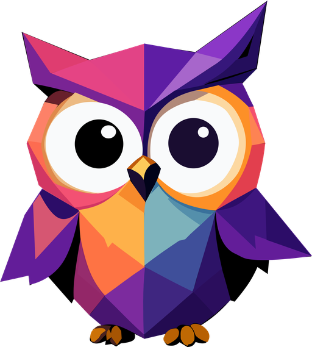
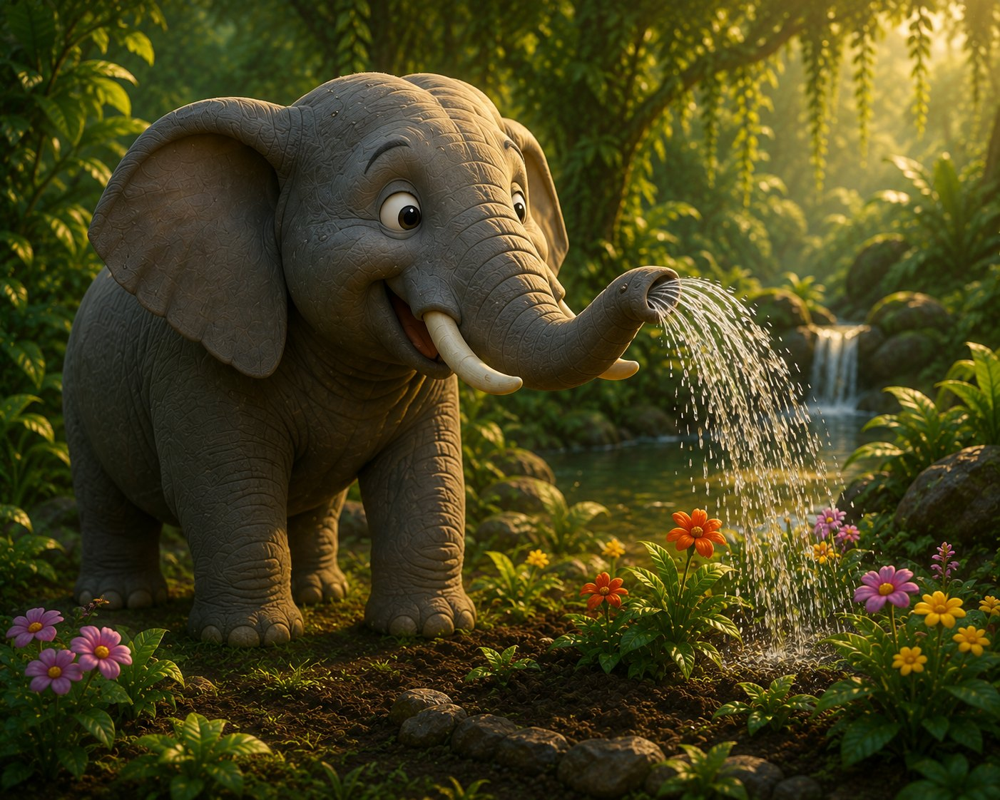
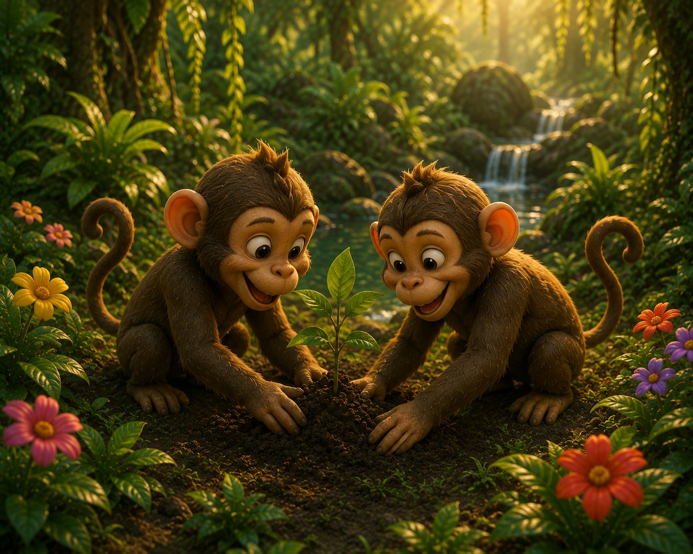
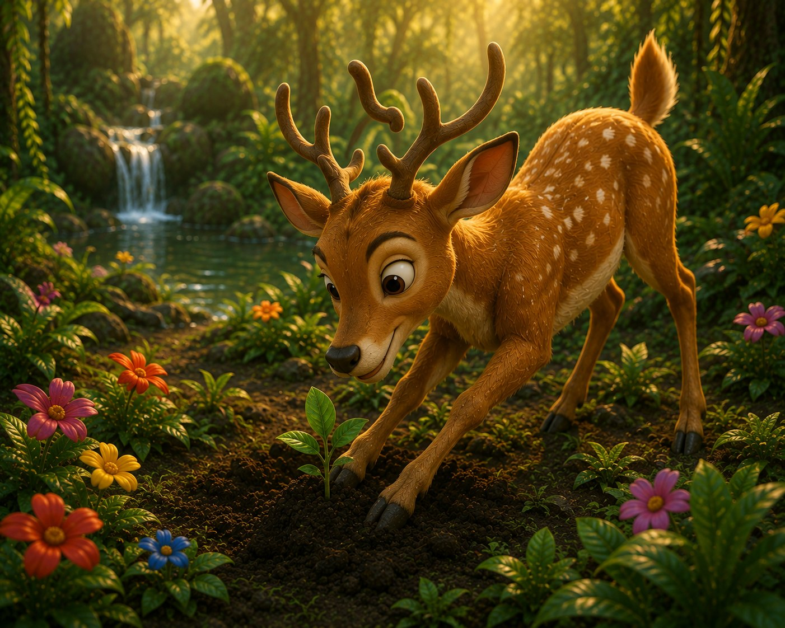
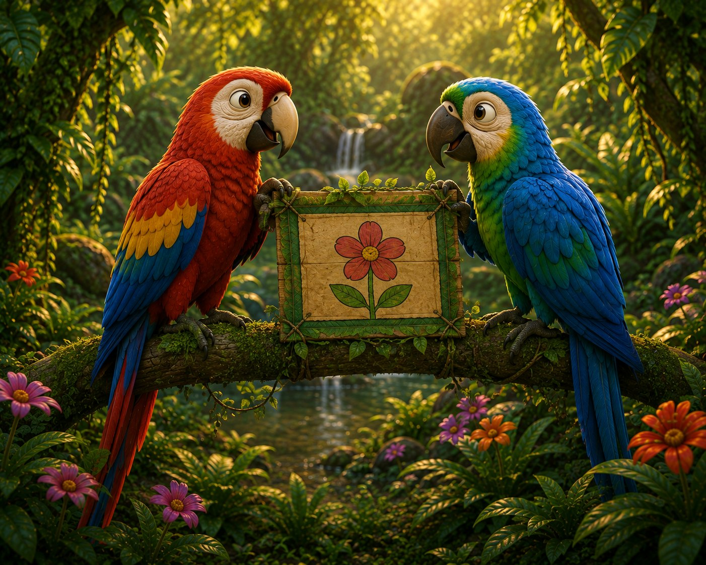

Contribution 01
Elephants
Brought the water.

Massbar Get Quote
Massbar
Every brand has a story.
Let's make yours impossible to ignore.
Chapter One
Deep in the jungle, all the animals decided to build the most beautiful garden.




Brought the water.
Planted the seeds.
Collected the flowers.
Spread the word.
That's how something beautiful gets built.
Brought the water.
Planted the seeds.
Collected the flowers.
Spread the word.
That's how something beautiful gets built.
The owl: the one who sees the whole pictureThe Massbar way
Strategy carries the water. Ideas plant the seeds. Design collects the beauty. Communication spreads the word. Nothing here works alone — and that is exactly the point.
The story is only beginning.